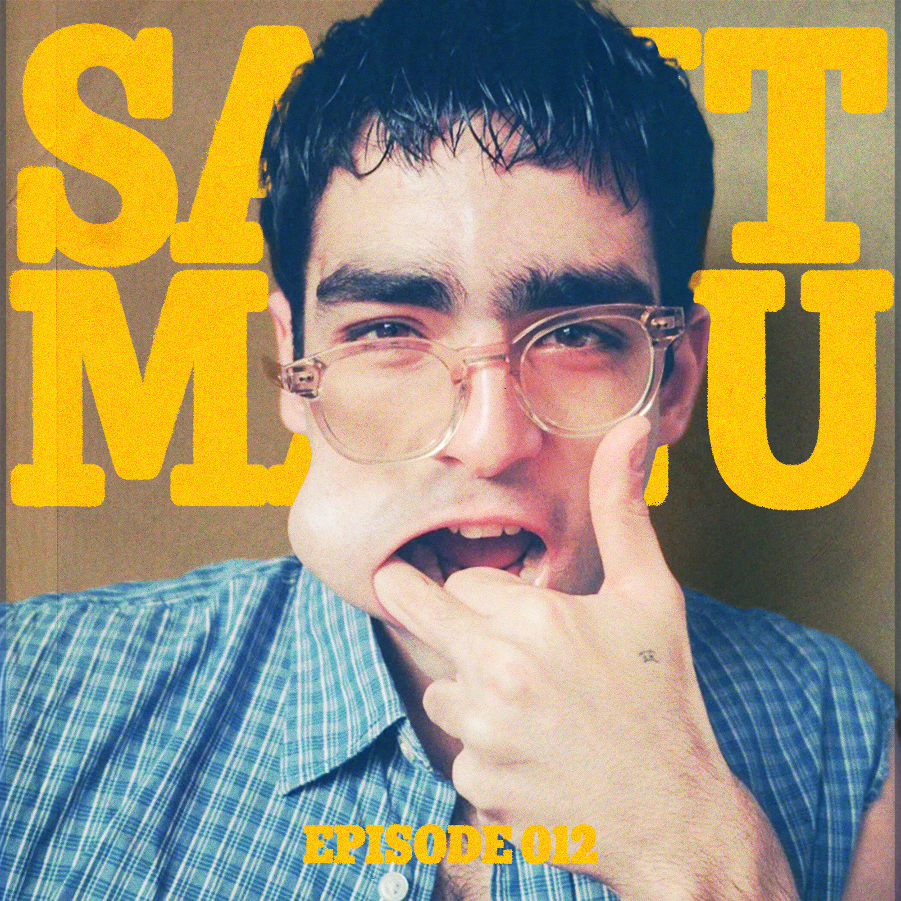

Episode 012 /// Saint Manu Radio
Nov. 2024
A continuation of 011 — a solemn retreat into fall and winter during the gap year. The optimism for what's ahead was slowly taking shape, but uncertainty still had the upper hand. The playlist for sitting with both things at once: the not-yet and the almost.
Cover: Omar Ayuso shot by Luis Venegas for Butt Magazine